전체 인덱스
1~6단계 학습 자료 — 각 단계의 포털 페이지(개요·용어·슬라이드·실습·도움말)와 전체 SVG 슬라이드 모음입니다.
🗺️ 루트 개요 슬라이드 5
📘 1단계 · Guardrail 개념과 아키텍처 7 슬라이드
포털 페이지
개요 · 용어 · 슬라이드 · 실습 · 도움말
s00-tech-spec · 기술 사양 (참고용)
s00-tech-spec.svg
s01-guardrail-flow · Guardrail 전체 처리 흐름
s01-guardrail-flow.svg

s02-guardrail-architecture · Guardrail 아키텍처
s02-guardrail-architecture.svg

s03-threats-and-controls · Guardrail 위협과 통제
s03-threats-and-controls.svg
s04-architecture-source · 아키텍처 소스코드
s04-architecture-source.svg
s05-architecture-checklist · 복습 체크리스트
s05-architecture-checklist.svg
s06-summary · 핵심 요약과 실습 질문
s06-summary.svg
📘 2단계 · Llama Guard·NeMo Guardrails 9 슬라이드
포털 페이지
개요 · 용어 · 슬라이드 · 실습 · 도움말

s00-tech-spec · 기술 사양 (참고용)
s00-tech-spec.svg

s01-guard-models · Llama Guard·NeMo Guardrails 적용
s01-guard-models.svg

s02-guardrail-theory · 두 Guardrails의 역할 이론
s02-guardrail-theory.svg

s03-adapters-source · 2단계 소스코드 관계도
s03-adapters-source.svg

s04-llama-guard-detail · Llama Guard 역할 상세
s04-llama-guard-detail.svg
s05-nemo-guardrails-detail · NeMo Guardrails 역할 상세
s05-nemo-guardrails-detail.svg

s06-runtime-choice · 실행 백엔드 선택
s06-runtime-choice.svg

s07-guardrail-checklist · 복습 체크리스트
s07-guardrail-checklist.svg

s08-summary · 핵심 요약과 실습 질문
s08-summary.svg
📘 3단계 · 정책 기반 차단과 출력 검열 6 슬라이드
포털 페이지
개요 · 용어 · 슬라이드 · 실습 · 도움말
s00-tech-spec · 기술 사양 (참고용)
s00-tech-spec.svg

s01-policy-filtering · 정책 기반 차단 및 출력 검열
s01-policy-filtering.svg

s02-policy-theory · 정책 차단과 출력 검열 이론
s02-policy-theory.svg

s03-policy-source · 정책과 가드레일 소스코드
s03-policy-source.svg
s04-policy-checklist · 복습 체크리스트
s04-policy-checklist.svg
s05-summary · 핵심 요약과 실습 질문
s05-summary.svg
📘 4단계 · 위험 등급 체계 6 슬라이드
포털 페이지
개요 · 용어 · 슬라이드 · 실습 · 도움말
s00-tech-spec · 기술 사양 (참고용)
s00-tech-spec.svg

s01-risk-rating · 위험 등급 체계 설계
s01-risk-rating.svg

s02-risk-theory · 위험 등급 설계 이론
s02-risk-theory.svg
s03-risk-source · 위험 등급 소스코드
s03-risk-source.svg
s04-risk-checklist · 복습 체크리스트
s04-risk-checklist.svg
s05-summary · 핵심 요약과 실습 질문
s05-summary.svg
📘 5단계 · 보안 대시보드와 알림 6 슬라이드
포털 페이지
개요 · 용어 · 슬라이드 · 실습 · 도움말

s00-tech-spec · 기술 사양 (참고용)
s00-tech-spec.svg

s01-dashboard-alerts · 보안 대시보드 및 알림 구축
s01-dashboard-alerts.svg

s02-dashboard-theory · 대시보드와 알림 이론
s02-dashboard-theory.svg

s03-dashboard-source · 대시보드와 알림 소스코드
s03-dashboard-source.svg
s04-dashboard-checklist · 복습 체크리스트
s04-dashboard-checklist.svg
s05-summary · 핵심 요약과 실습 질문
s05-summary.svg
📘 6단계 · 운영 리포트와 통합 실습 6 슬라이드
포털 페이지
개요 · 용어 · 슬라이드 · 실습 · 도움말
s00-tech-spec · 기술 사양 (참고용)
s00-tech-spec.svg
s01-integrated-report · 운영 리포트 및 통합 실습
s01-integrated-report.svg

s02-report-theory · 운영 리포트 이론
s02-report-theory.svg
s03-integrated-source · 통합 실습 소스코드
s03-integrated-source.svg
s04-report-checklist · 복습 체크리스트
s04-report-checklist.svg
s05-summary · 핵심 요약과 실습 질문
s05-summary.svg